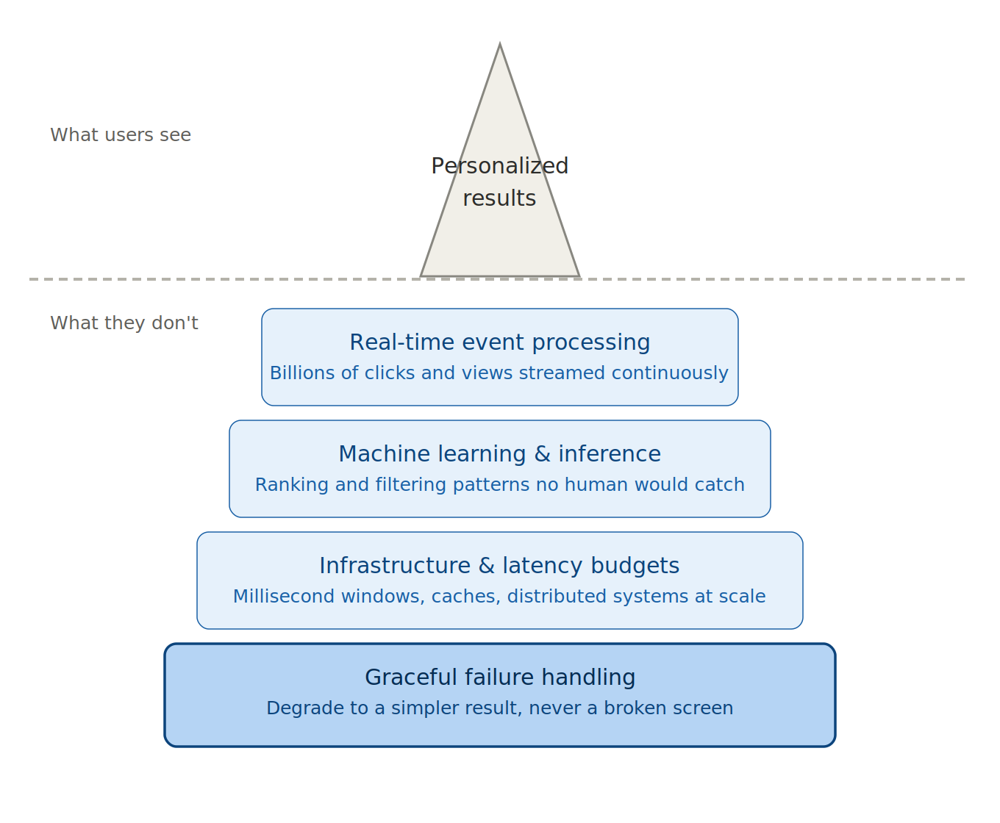

This article reflects general observations about large-scale software platforms. All examples are intentionally generalized and do not reference proprietary systems, internal implementations, or confidential data.
In today's software, the most important work is often the work you're never meant to see. You open a travel app and the right few options are already in front of you. A page loads before you've finished forming the thought. An experience just seems to understand what you came for. None of that is an accident, and almost none of it happens where the user can see it. It happens below the waterline.
It's worth looking at that hidden layer plainly, because it's widely misunderstood—even by people who build software for a living.
The internet used to be the same for everyone. Identical homepages, identical search results, the same "bestsellers" standing in for anything resembling a recommendation. Nobody complained, because nobody knew to.
Then the volume problem arrived and never left. A large platform today might carry millions of items and serve a global audience that expects the right answer instantly. Abundance stopped being the prize and became the obstacle. When everything is visible, nothing is, and people scroll until they give up and leave.
Personalization is the quiet fix. It doesn't add to the catalog; it narrows it to the handful that's likely yours. "Here are fifty thousand options" becomes "here are five." Less a magic trick than a piece of plumbing you only notice when it backs up.
It's easy to treat personalization as polish on top of the real product. It isn't. The cost of getting it wrong shows up fast, and it shows up as people leaving. A few familiar scenarios:
None of these are unusual. They're the default outcome when the filtering layer underneath fails to do its job.
There's a subtler cost too, and it's about attention rather than money. People only have so much of it. Every minute spent sifting and second-guessing is a minute not spent on whatever they actually came for. Done well, personalization mostly buys that time back.

Showing someone their favorite thing is the easy version. The real work is delivering the right thing at the right moment—inside a budget measured in milliseconds, for millions of people at once, without the page slowing to a crawl. And it has to keep working when something breaks. Because something always breaks.
This is where the field tends to underinvest. Underneath the simple result sits a stack most people never think about:
When a personalization system degrades, the user should see a slightly less tailored result—not a broken screen, not a spinning loader, not a stale answer that quietly misleads them. Building for that outcome is unglamorous. It rarely shows up in a demo. But it's the difference between infrastructure that scales and infrastructure that becomes a liability the moment it's load-bearing.
The same handful of failure patterns tend to surface across very different systems, which is why the reliability and efficiency of real-time serving deserves to be treated as a discipline of its own—not a footnote to the machine learning, but the foundation the machine learning sits on.
It's tempting to file all of this under "making apps nicer." That undersells it.
The same infrastructure that recommends a flight increasingly underpins systems people rely on for real decisions—what they read, what they buy, how they plan, where they go. As more of these systems route through real-time AI and machine learning, their reliability stops being a product detail and starts looking like something closer to public infrastructure. When the layer below the waterline is sound, millions of interactions a day simply work. When it isn't, the failure is broad, quiet, and hard to trace.
So the interesting frontier isn't personalization as a feature. It's the dependability and efficiency of the AI-driven serving infrastructure underneath it—the boring, foundational, load-bearing layer that everything else assumes will hold.
The pressures all point the same direction. More data, more options, more systems leaning on real-time inference, and less tolerance for any of it being slow or wrong. The products that last won't be the ones with the longest feature list. They'll be the ones whose foundation is solid enough that nobody upstream has to think about it.
The craft is invisible by design. The best outcome of this kind of work is that you never notice it at all—which is exactly why it's worth taking seriously.